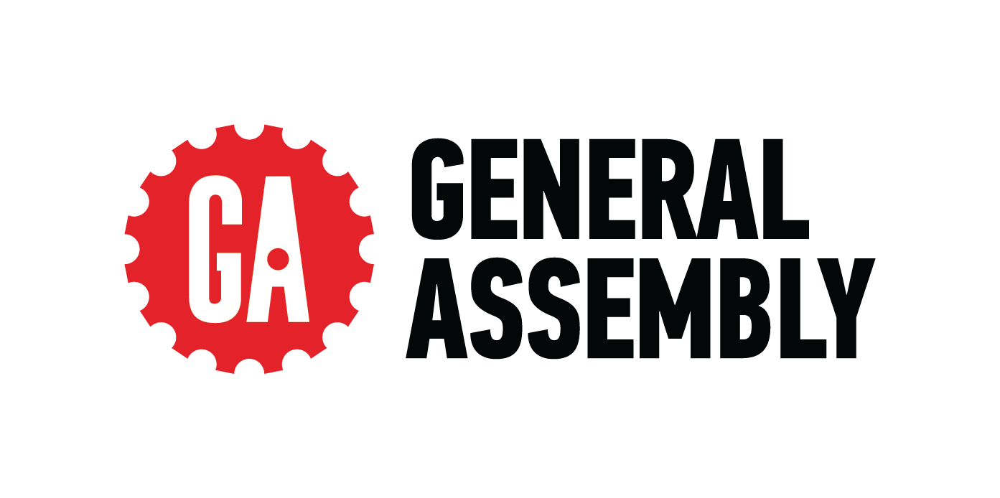

Hi, I'm
Building teams and products that ship — reliably, at scale.
Learn MoreOpen to engineering leadership roles
Previously at
Engineering manager with 8+ years delivering software at scale. I've led teams of 6–7 engineers at Spring Health and Freshly, shipping EHR systems and e-commerce platforms on time, with the bar high. At Triangle Services, I solo-built and launched a production platform now running across multiple U.S. airports.
I started as a frontend developer at the New York Times and have grown into a leader who still writes code. I care about developer experience, clean systems, and teams that hold each other accountable.
Outside of work: I played college hockey at Indiana University, and these days you'll find me on the tennis court — currently a 6.5 UTR and always working to push it higher. My dog also has more Instagram followers than me.
